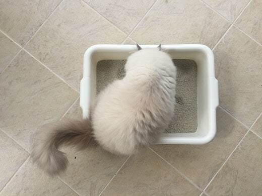
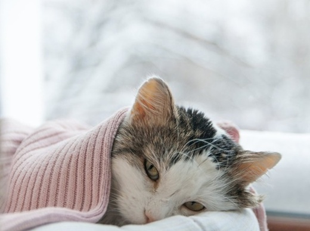

Cat Diarrhea: Causes and Treatment
You've noticed while cleaning out your cat's litter box that they've been having diarrhea lately, and you're a little concerned. Millions of cat parents witness this same issue with their cats every year. Whether your cat's version is the soft and gooey variety, the streaky bloody style or the unfortunately watery kind, you can be sure you're not alone in your litter box observations.
What is Cat Diarrhea?
Diarrhea is defined as stool that is softer, looser or more watery than it should be. Cats with diarrhea may defecate more frequently than usual, have accidents in the house, and may pass blood, mucus or even parasites in their feces.
Though most cases of cat diarrhea resolve in a matter of hours or days without intervention, cats who have it for more than a few days, or that show more severe signs (such as vomiting, appetite loss, bloody stools, watery stools or tiredness), should be seen by a veterinarian immediately.
It's important to note that smaller cats and kittens with diarrhea are especially susceptible to dehydration, so they should always be evaluated by a vet.
Symptoms of Diarrhea in Cats
- Mucus or blood in the stool
- Worms in the stool
- Defecating with increased frequency
- Straining to defecate
- .....
If your cat has diarrhea for more than 24 hours or if they exhibit any other symptoms such as vomiting, fever, or loss of appetite, it is crucial to take them to the veterinarian immediately.